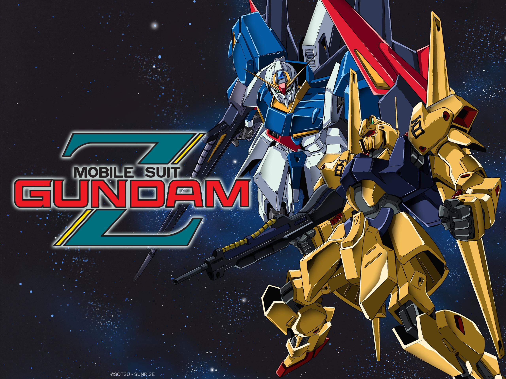
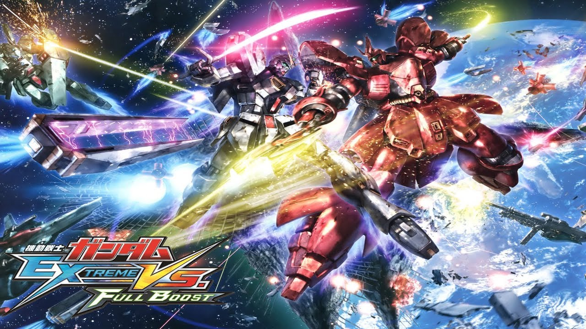
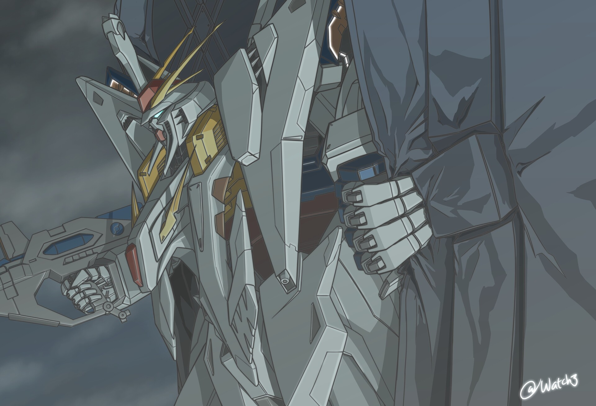

Era Awal Perang
Bumi yang kelebihan populasi memindahkan manusia ke koloni luar angkasa (Side). Side 3 mendeklarasikan kemerdekaan sebagai Principality of Zeon dan memulai perang melawan Earth Federation. Pada era ini terjadi kudeta politik di Zeon dan kepemimpinan Char Aznable. Pada era ini, kita diperkenalkan dengan Mobile Suit Gundam yaitu RX-78-2 dari EFSF (Earth Federation Space Force). Pada Era ini juga terjadi persaingan antara karakter Utama yaitu Amuro Ray yang menggunakan RX-78-2 dan Char Aznable sebagai pemimpin Zeon yang menggunakan Mobile Suit ZAKU I dan II dengan warna merahnya yang ikonik.
Era Konflik Internal & Lahir Neo Zeon
Setelah kekalahan dari Zeon, Earth Federation melakukan pemburuan ekstrim terhadap sisa-sisa Zeon yang berujung kepada penindasan koloni dan perang antar sipil. Hal ini dimulai dengan mulainya terbentuk faksi militer Bernama Titans yang dituju untuk melakukan pemburuan ini. Kelompok yang tidak suka akan perlakuan Earth Federation akhirnya melakukan pemberontakan, termasuk Amuro Ray. Mereka menginvasi Earth Federation dari dalam dan menciptakan inovasi mobile suit yang bisa bertransformasi (transformable MS). Oleh karena itu, lahirlah ZETA Gundam untuk melawan TITANS. Setelah pertempuran ini, NEO Zeon yang merupakan sisa sisa dari Zeon kemudian mengambil kesempatan untuk menyerang bumi, pada masa ini, kita diperkenalkan dengan mobile suit Double Zeta Gundam dan Qubeley.

Era Puncak Rivalitas dan Penemuan Psycho Frame
Pada masa ini, kita dijelaskan mengenai penemuan teknologi Psycho frame yang merupakan sebuah material dengan kemampuan untuk mengubah gelombang otak pilot menjadi kekuatan. Dimulai pada UC0093, Char Aznable dengan MS barunya yaitu Sazabi kembali memimpin Neo Zeon dan berniat untuk menghancurkan bumi. Amuro Ray sang karakter Utama kemudian berusaha untuk menghentikannya dengan MS baru yaitu Nu Gundam (RX-93). UC0096, penemuan psycho frame yang kemudian digunakan di 2 mobile suit yaitu Unicorn Gundam dan Banshee.

Era Kegelapan
Semakin jauh dari Era Awal, desain Mobile Suit mulai berubah. Dikarenakan keterbatasan sumber daya dan efisiensi, ukuran MS yang tadinya raksasa (sekitar 18-22 meter) mulai dikecilkan (sekitar 15 meter) namun dengan persenjataan yang jauh lebih mematikan. UC 0105, Hathaway Noa (anak dari komandan legendaris Bright Noa) memimpin kelompok teroris bernama Mafty untuk membunuh para pejabat korup Federation. Di era ini, MS raksasa seperti Xi Gundam dan Penelope mencapai batas akhir ukurannya dengan dimasukkannya sistem anti-gravitasi (Minovsky Flight) di dalam unit. Kemudian pada UC0123, setelah hancurnya perdamaian, tren miniaturisasi mobile suit dimulai seperti kemunculan Gundam F91. Earth Federation yang semakin lama semakin lemah, membuat bumi menjadi rentan serangan. Bumi diserang oleh Zanscare Empire menggunakan metode terror. Titik ini adalah titik tergelap dari timeline Universal Century.
